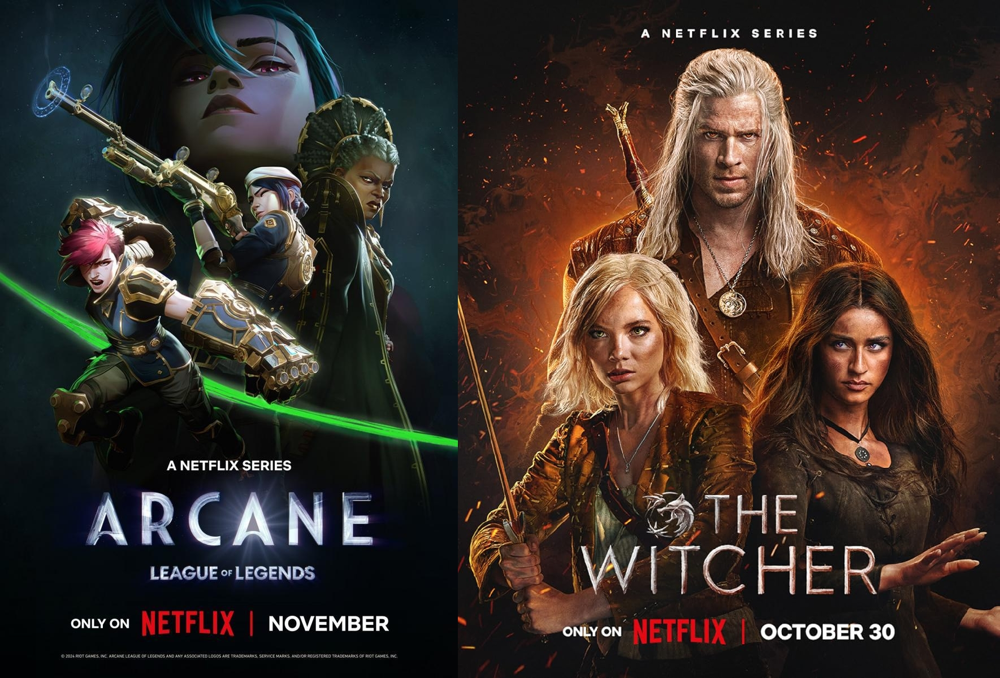
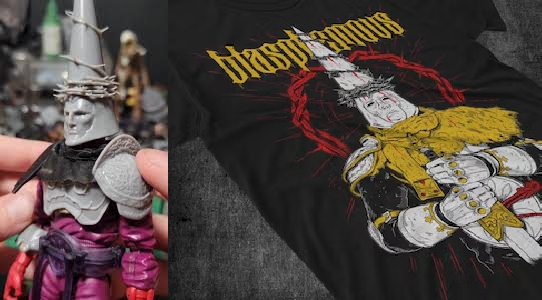

Nos hemos acostumbrado a vivir rodeados de universos que vienen de fuera: los jugamos, los vemos en streaming, los comentamos en redes y hasta escuchamos sus bandas sonoras en Spotify. Mientras tanto, las historias creadas aquí rara vez dan ese salto a otros formatos.

Arcane y The Witcher, ejemplos del éxito transmedia internacional.
Los datos confirman esa sensación. España es un mercado muy fuerte en consumo de videojuegos, pero la mayoría de los estudios nacionales son pequeños y dependen de editoras internacionales para poder mantenerse. Consumimos muchísimo, pero creamos universos que casi nunca llegan a expandirse más allá del propio juego.
Ojo, que esto no tiene por qué ser algo negativo en sí mismo. Que en España triunfen Arcane, las series de The Witcher o los conciertos virtuales de Fortnite demuestra que el público está más que preparado para experiencias transmedia complejas. Pasamos sin problema del juego a la serie, del directo de Twitch al cómic o al merchandising. El problema aparece cuando miramos hacia dentro y vemos que casi nunca somos nosotros quienes ponemos en circulación esas IP que lo ocupan todo.
El patrón internacional
Fuera de España el patrón se repite constantemente. League of Legends, Cyberpunk 2077 o The Witcher no son solo videojuegos: son cómics, novelas, música, merchandising, e-sports y eventos en directo. Detrás hay grandes empresas y mucha planificación, pero también una forma muy clara de entender el videojuego como solo una parte de algo más grande. Aquí, en cambio, muchos proyectos funcionan como disparos únicos: salen, reciben buenas críticas o algún premio, y desaparecen del radar sin cómics, sin serie de animación, sin podcast, sin nada que mantenga vivo ese mundo.

Blasphemous, uno de los pocos ejemplos de expansión física y de arte en España.
Es cierto que el tamaño importa. La mayoría de estudios españoles tienen recursos limitados y bastante hacen con terminar el juego y encontrar un publisher. Pero también hay una cuestión de enfoque. Igual que se dedica tiempo a pensar mecánicas o narrativa, se podría empezar a plantear desde el inicio qué partes del universo del juego podrían funcionar en otros formatos: un webcómic, un corto animado, un concierto de la banda sonora en un festival local o incluso una mini serie en YouTube. No se trata de soñar con “la próxima The Last of Us de HBO”, sino de abrir pequeñas puertas para que el proyecto siga respirando.
En este cambio de mentalidad no solo entran en juego los estudios. Las políticas públicas suelen centrarse en cuántos videojuegos se producen, pero rara vez en cuántas IP españolas consiguen mantenerse vivas en más de un medio. Las universidades enseñan a programar y a diseñar, pero no siempre a pensar una obra como una marca cultural que pueda existir también como cómic o serie corta. Y los medios especializados, muchas veces, siguen dedicando la mayor parte de su atención a los grandes lanzamientos internacionales, mientras los intentos transmedia de aquí pasan casi desapercibidos.
Seguir disfrutando de lo que llega de fuera es inevitable y, de hecho, positivo: aporta referentes, calidad y contexto. El reto está en aprender de ello para que nuestras propias historias no se queden siempre en segundo plano. Si en otros países han sido capaces de crear universos que viajan de la consola al cine y al concierto, no hay una razón real para que desde España no podamos empezar a jugar esa misma partida, pero con nuestros personajes, nuestras ciudades y nuestras rarezas culturales. Al final, lo que está en juego no es solo vender más copias, sino conseguir que, dentro del ruido transmedia global, también se escuche algo que suene a nosotros.